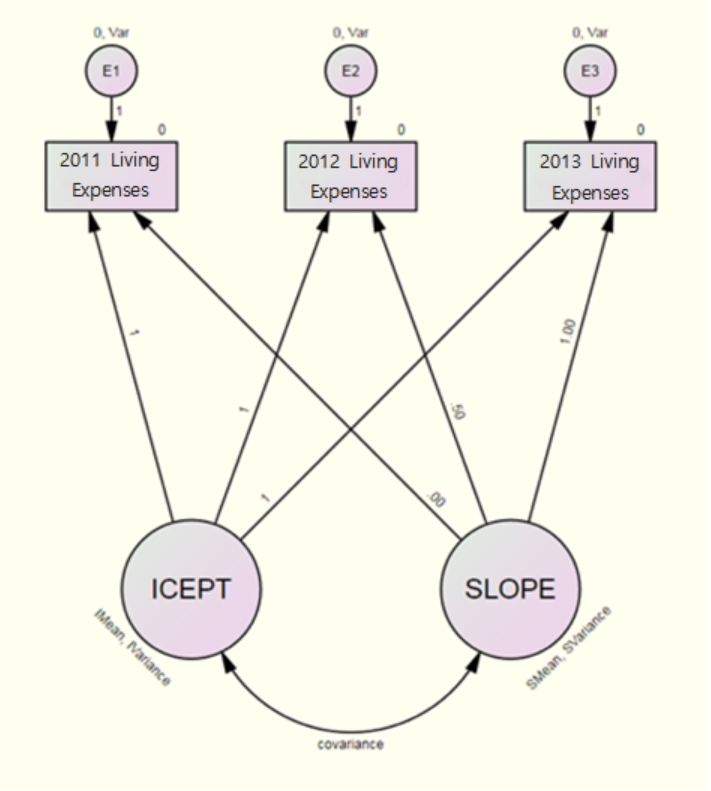
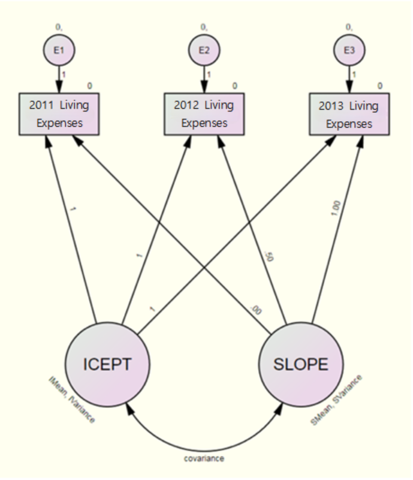
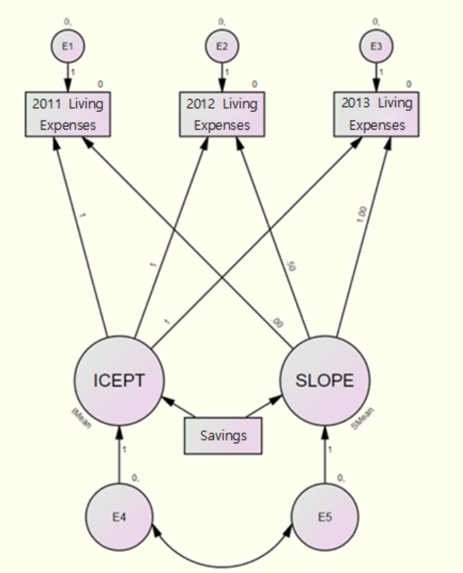

Analyzing Monthly Living Expenses
1. Introduction
Understanding the relationship between living expenses and
savings is crucial in today’s economy for effective financial planning.
This project investigates how various factors such as employment status
and educational expenses for children influence monthly living expenses.
Leveraging latent growth curve modeling (LGCM) and path analysis, the
study uncovers patterns and relationships to provide insights into
economic behaviors.
2. Goal
The primary goal of this study is to analyze how monthly living
expenses evolve over time and to determine whether factors like
employment status, educational expenses for children, and savings
significantly impact these changes. Additionally, the study aims to
evaluate how missing data treatment methods, such as regression
imputation and full information maximum likelihood (FIML), affect the
analysis results.
3. Data and Variables
This project uses data from the Korean Longitudinal Survey of
Women & Families (KLoWF), encompassing responses from 9,068
households over three years (2011–2013). The panel dataset allows for
tracking changes over time and assessing individual-level variations in
living expenses.
The dataset includes information on various
financial and demographic factors, with a focus on the following
variables:
- Monthly Living Expenses: Average monthly household
expenses in 10,000 Korean Won (KRW).
- Savings: Total monthly savings, including deposits,
savings-type insurance, and pensions, expressed in 10,000 KRW.
- Employment Status: A binary variable indicating
whether the household head is employed (Yes/No).
- Educational Expenses: Monthly spending on children’s education, including childcare and extracurricular activities, expressed in 10,000 KRW.
4. Exploratory Data Analysis
Below are the descriptive statistics and frequency analysis results
from SPSS:
| Variable | Year | Mean (KRW) | Standard Deviation (KRW) |
|---|---|---|---|
| Monthly Living Expenses | 2011 | 178.75 | 50.30 |
| 2012 | 191.31 | 55.12 | |
| 2013 | 205.15 | 60.45 | |
- Average monthly living expenses show a clear upward trend over the
three years.
- The increasing standard deviation highlights growing variability in
expenses, indicating widening differences in household spending
patterns. This could reflect changes in income distribution or spending
habits among households.
| Variable | Category | Frequency (%) |
|---|---|---|
| Employment Status | Employed | 82.4 |
| Unemployed | 17.6 | |
- A significant majority of households (82.4%) have an employed head of household, suggesting financial stability through employment.
- A smaller portion (17.6%) of households have an unemployed head of household, indicating potential financial challenges for these households.
| Savings Category | Frequency | Percentage (%) | Cumulative Percentage (%) |
|---|---|---|---|
| 1-100 | 4285 | 47.3 | 47.3 |
| 101-200 | 4192 | 46.2 | 93.5 |
| 201-300 | 455 | 5.0 | 98.5 |
| 301-400 | 89 | 1.0 | 99.5 |
| 401-1500 | 28 | 0.3 | 99.8 |
| Total | 9068 | 100.0 | 100.0 |
- The largest percentage of households (47.3%) have savings in the 1-100 (10,000 KRW) range, followed by 46.2% in the 101-200 KRW range.
- Very few households save above 300 (10,000 KRW), with only 1% saving in the 301-400 (10,000 KRW) range.
- The Cumulative Percentage column shows that over 93% of households have savings of 200 (10,000 KRW) or less, suggesting a concentration in lower savings categories.
| Educational Expenses Category | Frequency (%) |
|---|---|
| 1-50 (10,000 KRW) | 85.6 |
| 51-100 (10,000 KRW) | 12.0 |
| 101-150 (10,000 KRW) | 1.8 |
| 151-200 (10,000 KRW) | 0.5 |
| 201+ (10,000 KRW) | 0.2 |
| Total | 100.0 |
- The majority of households (85.6%) spend between 1-50 (10,000 KRW) on educational expenses.
- 12.0% of households spend between 51-100 (10,000 KRW), while only 0.2% spend more than 2M KRW.
- The cumulative percentage shows that 99.5% of households have educational expenses below 2M KRW.
To investigate how monthly living expenses change over time, we will address missing data using two imputation methods: Regression Imputation and Full Information Maximum Likelihood (FIML). Following this, we will apply Latent Growth Curve Modeling (LGCM) to analyze the data.
5. Analysis
1-1. Path Analysis
Missing data were handled using Regression Imputation prior to
conducting path analysis.
Path analysis will be conducted to
examine the causal relationships between Employment Status, Educational
Expenses, Average Monthly Savings, and Living Expenses, specifically to
understand how Employment Status and Educational Expenses influence
Living Expenses.

[Fig. Path Diagram of the Research Model]
This research model assumes that Employment Status influences Private Education Expenses, Monthly Savings, and Living Expenses. It also assumes that Private Education Expenses impact Monthly Savings and Living Expenses, and that Monthly Savings influence Living Expenses.
(1)Model Fit Evaluation (Default Model)
- Number of distinct sample moments: 14
- Number of distinct parameters to be estimated: 14
- Degrees of freedom: 0 (calculated as 14 - 14)
Results
- Chi-Square: 0.000
- Degrees of Freedom: 0
- Minimum Achieved
- Probability level cannot be computed
The results show \(\chi^2 = 0\) and \(df = 0\). When \(\chi^2 = 0\), it indicates a perfect fit between the research model and the data, meaning there is no difference between the observed values and the predicted values. The \(df = 0\) implies that the number of parameters to be estimated is equal to the number of data points, which typically occurs in highly constrained models.
This type of model is considered over-identified and is the most constrained form of the model, providing the highest degree of fit but lacking flexibility. Because of this, such models are overly simplistic and cannot capture the complexity of the relationships between variables. Therefore, no meaningful conclusions can be drawn from this model due to its lack of complexity and capacity to represent real-world data.

[Fig. Graphical Representation of Model Estimates]
| Path | Estimate | S.E. | C.R. | P | Label |
|---|---|---|---|---|---|
| Private Education ← Employment | -14.655 | 0.948 | -15.464 | *** | |
| Savings ← Employment | -9.622 | 2.060 | -4.694 | *** | |
| Savings ← Private Education | 0.265 | 0.013 | 19.961 | *** | |
| Living Expenses 2013 ← Savings | -37.592 | 2.603 | -14.446 | *** | |
| Living Expenses 2013 ← Private Education | 1.610 | 0.029 | 56.194 | *** |
Summary
- Path Coefficient: -14.655
- p-value: < 0.01
- Significance Level: \(\alpha = 0.05\)
- Interpretation: Employment status significantly and negatively affects private education expenditures.
Path Coefficient Interpretation
The direct effect can be evaluated based on the magnitude and significance of the path coefficient.
The path coefficient for [Employment → Private Education] is -14.655, and the p-value is smaller than 0.01, indicating significance at the \(\alpha = 0.05\) level.
This result shows that employment status has a significant direct effect on private education, with a negative direction of influence.
1-2. Effects Analysis
Total Effects
| Path | Employment | Private Education | Savings |
|---|---|---|---|
| Private Education | -14.655 | 0.000 | 0.000 |
| Savings | -13.497 | 0.264 | 0.000 |
| Living Expenses (2013) | -64.762 | 1.660 | 0.265 |
Direct Effects
| Path | Employment | Private Education | Savings |
|---|---|---|---|
| Private Education | -14.655 | 0.000 | 0.000 |
| Savings | -9.622 | 0.264 | 0.000 |
| Living Expenses (2013) | -37.592 | 1.610 | 0.265 |
Indirect Effects
| Path | Employment | Private Education | Savings |
|---|---|---|---|
| Private Education | 0.000 | 0.000 | 0.000 |
| Savings | -3.876 | 0.000 | 0.000 |
| Living Expenses (2013) | -27.171 | 0.070 | 0.000 |
Path: Employment → Savings
- Total Effect: -13.497
- Direct Effect: -9.622
- Indirect Effect: -3.876
The relationship can be broken down as follows: \[
\text{Total Effect} (-13.497) = \text{Direct Effect} (-9.622) +
\text{Indirect Effect} (-3.876)
\]
The Indirect Effect of -3.876 is calculated as: \[
\text{Indirect Effect} (-3.876) = \text{Path Coefficient}
(\text{Employment → Private Education}) (-14.655) \times \text{Path
Coefficient} (\text{Private Education → Savings}) (0.264)
\]
Path: Employment → Living Expenses
- Total Effect: -64.762
- Direct Effect: -37.592
- Indirect Effect: -27.171
The relationship can be broken down as follows: \[
\text{Total Effect} (-64.762) = \text{Direct Effect} (-37.592) +
\text{Indirect Effect} (-27.171)
\]
The Indirect Effect of -27.171 is further decomposed into the
following pathways:
- Employment → Savings → Living Expenses
- Employment → Private Education → Savings → Living Expenses
- Employment → Private Education → Living Expenses
The Indirect Effect highlights the mediating roles of Private Education and Savings in the impact of Employment on Living Expenses.
The decomposition provides insights into the complex pathways that influence the dependent variable.
Direct Effect Significance
The significance of the direct effects is as follows:
| Path | Estimate | S.E. | C.R. | p-value | Significance |
|---|---|---|---|---|---|
| Private Education ← Employment | -14.655 | 0.948 | -15.464 | *** | Significant |
| Savings ← Employment | -9.622 | 2.060 | -4.694 | *** | Significant |
| Savings ← Private Education | 0.265 | 0.013 | 19.961 | *** | Significant |
| Living Expenses ← Savings | -37.592 | 2.603 | -14.446 | *** | Significant |
| Living Expenses ← Private Education | 1.610 | 0.029 | 56.194 | *** | Significant |
The path Private Education ← Employment has a significant direct effect with a negative coefficient of -14.655, indicating that Employment negatively influences Private Education.
The path Savings ← Employment also shows a significant negative direct effect of -9.622.
All direct effects have p-values less than 0.001 (*), indicating high statistical significance.
Indirect Effect Significance
- The \(p\)-values for all indirect effects were \(p = 0.010\), which is statistically significant at \(\alpha = 0.05\).
- This confirms that the indirect effects in the model are significant and meaningful.
6. Latent Growth Curve Model

[Fig. Latent Growth Curve Model]
In this model, the second method for handling missing data provided by Amos, Full Information Maximum Likelihood (FIML), is utilized to ensure accurate estimation by using all available data points without imputing missing values.
(1)Model Fit Evaluation
| Measure | Value |
|---|---|
| Chi-square (\(\chi^2\)) | 32.272 |
| Degrees of Freedom (df) | 3 |
| Probability Level (p) | 0.000 |
Comparative Fit Measures
| Model | Parameters (NPAR) | CMIN | DF | p-value | CMIN/DF |
|---|---|---|---|---|---|
| Default model | 6 | 32.272 | 3 | 0.000 | 10.757 |
| Saturated model | 9 | 0.000 | 0 | - | - |
| Independence model | 3 | 12280.110 | 6 | 0.000 | 2046.685 |
The default model’s Chi-square statistic (\(\chi^2 = 32.272\)) with df = 3 and p-value = 0.000 indicates a poor fit to the data.
The CMIN/DF value of 10.757 exceeds the acceptable threshold (typically \(< 5\)), further supporting that the model does not fit well.
Compared to the independence model (\(\text{CMIN/DF} = 2046.685\)), the default model shows a relatively better fit but is still inadequate overall.
Model Without Constraints on Error Variance

[Fig. Model Without Constraints on Error Variance]
- Model Fit Results
| Metric | Value |
|---|---|
| Chi-square (χ²) | 0.107 |
| Degrees of Freedom (df) | 1 |
| p-value | 0.744 |
The model has a degree of freedom of 1, a Chi-square value (χ²) of
0.107, and a p-value of 0.744.
This indicates that the null
hypothesis that the model fits well cannot be rejected.
Therefore,
the model can be considered a good fit based on the Chi-square test.
CMIN/DF and Other Fit Indices
| Model | NPAR | CMIN | DF | p-value | CMIN/DF |
|---|---|---|---|---|---|
| Default model | 8 | 0.107 | 1 | 0.744 | 0.107 |
| Saturated model | 9 | 0.000 | 0 | - | - |
| Independence model | 3 | 12280.110 | 6 | 0.000 | 2046.685 |
The Default model, with 8 parameters, fits between the Saturated model (9 parameters) and the Independence model (3 parameters). The low CMIN/DF value (0.107) also supports that the model is a good fit.
Baseline Comparisons
| Model | NFI Delta1 | RFI rho1 | IFI Delta2 | TLI rho2 | CFI |
|---|---|---|---|---|---|
| Default model | 1.000 | 1.000 | 1.000 | 1.000 | 1.000 |
| Saturated model | 1.000 | 1.000 | 1.000 | 1.000 | 1.000 |
| Independence model | 0.000 | 0.000 | 0.000 | 0.000 | 0.000 |
RMSEA (Root Mean Square Error of Approximation)
| Model | RMSEA | LO 90 | HI 90 | PCLOSE |
|---|---|---|---|---|
| Default model | 0.000 | 0.000 | 0.019 | 1.000 |
| Independence model | 0.475 | 0.468 | 0.482 | 0.000 |
The additional indices, including NFI, TLI, and CFI, all exceed 0.9 for the Default and Saturated models, indicating a good fit. Furthermore, the RMSEA value of 0.000 is below the threshold of 0.05, which supports the conclusion that the model fits well. Therefore, the estimation of parameters can proceed with confidence.
(2) Model Estimation without Variance
Constraints on Error Terms
Null and Alternative Hypotheses
for ICEPT and SLOPE:
- Null hypothesis (H₀):
- ICEPT = 0
- SLOPE = 0
- Alternative hypothesis (H₁):
- ICEPT ≠ 0
- SLOPE ≠ 0
| Variable | Estimate | SE | CR | p-value |
|---|---|---|---|---|
| ICEPT | 178.688 | 1.072 | 166.652 | *** |
| SLOPE | 27.600 | 1.009 | 27.364 | *** |
- The mean estimate for ICEPT (intercept) is 178.688, representing the
initial level of monthly living expenses in 2011.
- The mean estimate for SLOPE (rate of change) is 27.600, indicating
an annual increase in monthly living expenses.
- Both ICEPT and SLOPE are statistically significant (p < 0.001).
| Variable | Variance | SE | CR | p-value |
|---|---|---|---|---|
| ICEPT | 8340.195 | 194.100 | 42.968 | *** |
| SLOPE | 2245.592 | 326.040 | 6.887 | *** |
- The variance for ICEPT is 8340.195, indicating variability in initial levels of monthly living expenses across households.
- The variance for SLOPE is 2245.592, reflecting differences in the rate of change in expenses.
- Both variances are statistically significant (p < 0.001), suggesting meaningful individual-level variability.
The variance estimates for ICEPT and SLOPE are 8340.195 and 2245.592, respectively. Based on the p-value, the variance is statistically significant, indicating meaningful individual differences in the initial levels and rates of change in monthly living expenses. This means that there is variability in both the starting point (initial level) and the change rate of monthly living expenses among individuals.
Using these results, the average monthly living expenses over
three years can be calculated as follows:
\[ \text{2011 Monthly Living Expenses} = 178.688 + 0.000 \times 27.600 = 178.688 \]
\[ \text{2012 Monthly Living Expenses} = 178.688 + 0.5 \times 27.600 = 192.488 \]
\[ \text{2013 Monthly Living Expenses} = 178.688 + 1.0 \times 27.600 = 206.288 \]
Implied Mean
| Year | Implied Mean (Monthly Living Expenses) |
|---|---|
| 2011 | 178.688 |
| 2012 | 192.488 |
| 2013 | 206.287 |
Using these implied means, the average monthly living expenses for
2014 can be predicted as:
\[ \text{2014 Monthly Living Expenses} = 178.688 + 1.5 \times 27.600 = **220.088** \]
A model was created to examine whether the pattern of changes in monthly living expenses differs based on the level of savings.
Covariate-Added Model

[Fig. Covariate-Added Model]
(1)Model Fit Results
| Metric | Value |
|---|---|
| Number of distinct sample moments | 14 |
| Number of distinct parameters to be estimated | 12 |
| Degrees of freedom (14 - 12) | 2 |
| Chi-square (\(\chi^2\)) | 0.133 |
| Probability level (\(p\)) | 0.936 |
The results show that the degrees of freedom (\(df\)) are 2, the chi-square statistic
(\(\chi^2\)) is 0.133, and the
probability level (\(p\)) is 0.936.
Since the \(p\)-value is greater than
0.05, the null hypothesis that the model fits well cannot be rejected.
Therefore, according to the chi-square statistic, the model is
considered a good fit.
CMIN and Model Fit
| Model | NPAR | CMIN | DF | P | CMIN/DF |
|---|---|---|---|---|---|
| Default model | 12 | 0.133 | 2 | 0.936 | 0.067 |
| Saturated model | 14 | 0.000 | 0 | - | - |
| Independence model | 4 | 12751.603 | 10 | 0.000 | 1275.160 |
- The Default model fits well as indicated by the Chi-square (0.133) and p-value (0.936), which do not reject the null hypothesis of good fit.
- The CMIN/DF (0.067) is extremely low, confirming a well-fitting model.
Baseline Comparisons
| Model | NFI (Delta1) | RFI (rho1) | IFI (Delta2) | TLI (rho2) | CFI |
|---|---|---|---|---|---|
| Default model | 1.000 | 1.000 | 1.000 | 1.001 | 1.000 |
| Saturated model | 1.000 | 1.000 | 1.000 | 1.001 | 1.000 |
| Independence model | 0.000 | 0.000 | 0.000 | 0.000 | 0.000 |
RMSEA
| Model | RMSEA | LO 90 | HI 90 | PCLOSE |
|---|---|---|---|---|
| Default model | 0.000 | 0.000 | 0.005 | 1.000 |
| Independence model | 0.375 | 0.369 | 0.380 | 0.000 |
- The results indicate a Chi-square value (\(\chi^2\)) of 0.133 with 2 degrees of
freedom (DF), yielding a p-value of 0.936.
- This high p-value indicates that the model fits the data well, failing to reject the null hypothesis of good fit.
(2)Parameter Estimates
| Dependent Variable | Predictor | Estimate | S.E. | C.R. | P |
|---|---|---|---|---|---|
| ICEPT | Savings | 0.399 | 0.018 | 21.683 | <0.001 |
| SLOPE | Savings | 0.027 | 0.018 | 1.467 | 0.142 |
ICEPT (Intercept): The path coefficient from Savings to ICEPT is 0.399, with a p-value < 0.001. This indicates that the initial level of monthly living expenses (ICEPT) is significantly influenced by savings.
SLOPE (Rate of Change): The path coefficient from Savings to SLOPE is 0.027, with a p-value = 0.142. This suggests that the rate of change in monthly living expenses (SLOPE) is not significantly influenced by savings.
Interpretation
- Savings significantly impact the initial level of living expenses (ICEPT), but there is no significant effect on the rate of change (SLOPE).
- Thus, while savings are associated with differences in initial living expenses, they do not explain differences in how living expenses change over time.
To handle missing data, Regression Imputation was utilized. This method ensures that missing values are estimated based on observed data, providing a reliable foundation for subsequent analyses.
(1)Model Fit Evaluation
After imputing missing values, the model fit was assessed. The results of the model fit evaluation are as follows:
| Statistic | Value |
|---|---|
| Chi-square (\(\chi^2\)) | 32.272 |
| Degrees of Freedom (df) | 3 |
| Probability (p-value) | 0.000 |
| CMIN/DF | 10.757 |
The Chi-square test indicates that the model is not a good fit
(\(p < 0.001\)). Additionally, the
CMIN/DF value of 10.757 exceeds the acceptable range, further supporting
the conclusion that the model does not fit well.
Based on the above evaluation, the model is not suitable for
explaining the observed data effectively. Further adjustments to the
model or alternative methodologies may be required to achieve a better
fit.
Model Fit Evaluation without Variance
Constraints on Error Terms
(1) Model Fit Evaluation
The fit of the model without variance constraints on error terms
was evaluated.
The results are presented in the following
table:
| Statistic | Value |
|---|---|
| Chi-square (\(\chi^2\)) | 0.107 |
| Degrees of Freedom (df) | 1 |
| Probability (p-value) | 0.744 |
The p-value (\(p = 0.744\)) indicates that the null hypothesis cannot be rejected, and the model fits well according to the Chi-square test.s Therefore, the model is considered a good fit based on this evaluation.
CMIN
| Model | NPAR | CMIN | DF | P | CMIN/DF |
|---|---|---|---|---|---|
| Default model | 8 | 0.107 | 1 | 0.744 | 0.107 |
| Saturated model | 9 | 0.000 | 0 | - | - |
| Independence model | 3 | 12280.110 | 6 | 0.000 | 2046.685 |
From the results above, the Default model (research model) has 8
parameters, which places it between the Saturated model (9 parameters)
and the Independence model (3 parameters). Therefore, the model is
considered acceptable. Additionally, the CMIN/DF value of 0.107 is very
low, further indicating good model fit.
Baseline Comparisons
| Model | NFI Delta1 | RFI rho1 | IFI Delta2 | TLI rho2 | CFI |
|---|---|---|---|---|---|
| Default model | 1.000 | 1.000 | 1.000 | 1.000 | 1.000 |
| Saturated model | 1.000 | 1.000 | 1.000 | 1.000 | 1.000 |
| Independence model | 0.000 | 0.000 | 0.000 | 0.000 | 0.000 |
Parsimony-Adjusted Measures
| Model | PRATIO | PNFI | PCFI |
|---|---|---|---|
| Default model | 0.167 | 0.167 | 0.167 |
| Saturated model | 0.000 | 0.000 | 0.000 |
| Independence model | 1.000 | 1.000 | 1.000 |
RMSEA
| Model | RMSEA | LO 90 | HI 90 | PCLOSE |
|---|---|---|---|---|
| Default model | 0.000 | 0.000 | 0.019 | 1.000 |
| Independence model | 0.475 | 0.468 | 0.482 | 0.000 |
The baseline comparison indices (NFI, TLI, CFI, etc.) all exceed 0.9,
suggesting strong model fit.
Additionally, the RMSEA value for the
Default model is 0.000, which is well below the threshold of 0.05,
further confirming that the model demonstrates excellent fit.
(2)Parameter Estimates in the Model Without Variance Constraints on Error Terms
Mean Estimates
| Parameter | Estimate | S.E. | C.R. | p-value | Label |
|---|---|---|---|---|---|
| ICEPT | 178.688 | 1.072 | 166.652 | *** | IMean |
| SLOPE | 27.600 | 1.009 | 27.364 | *** | SMean |
- The mean estimate for ICEPT (initial level of monthly living
expenses) is 178.688, representing the average monthly living expenses
in 2011.
- The mean estimate for SLOPE (rate of change) is 27.600, indicating a
statistically significant increase in monthly living expenses each
year.
- The p-values for both parameters are less than 0.001, confirming that both estimates are statistically significant.
Variance Estimates
| Parameter | Estimate | S.E. | C.R. | p-value | Label |
|---|---|---|---|---|---|
| ICEPT | 8340.195 | 194.100 | 42.968 | *** | IVariance |
| SLOPE | 2245.592 | 326.040 | 6.887 | *** | SVariance |
- The variance estimate for ICEPT is 8340.195, and for SLOPE, it is
2245.592. - Both variances are statistically significant with p-values
less than 0.001. - This indicates significant individual differences in
both the initial level and the rate of change in monthly living
expenses. The results suggest that:
- There is variation in the initial level of living expenses among
individuals.
- There is variation in the rate of change in living expenses across individuals.
These findings highlight the significance of both the
average trends and the variability in monthly living expenses over
time.